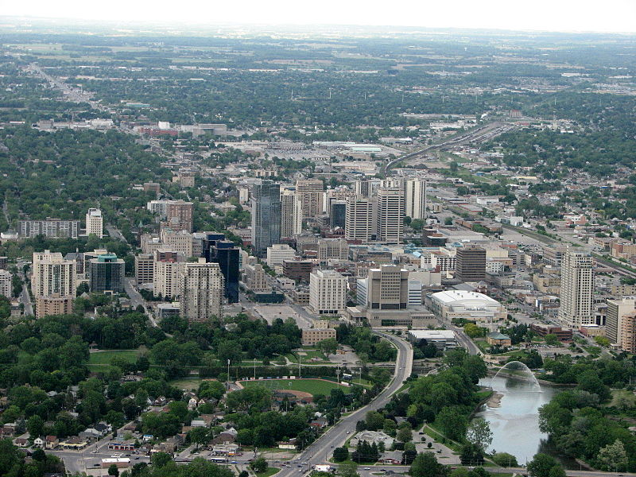

Photo by Adam Colvin
London, Ontario - the Forest City
Did You Know...
-April 14th, 2016
-
London was almost destroyed by a fire on the 13th of April, 1845!
-
Settlers originally chose London to be the capital city of Ontario, but later changed their minds and made Toronto the capital city.
-
The area was originally covered by glaciers that retreated thousands of years ago, leaving behind lowlands and the Great Lakes.
Posted by Carol Xu
Copyright © 2016 Carol Xu